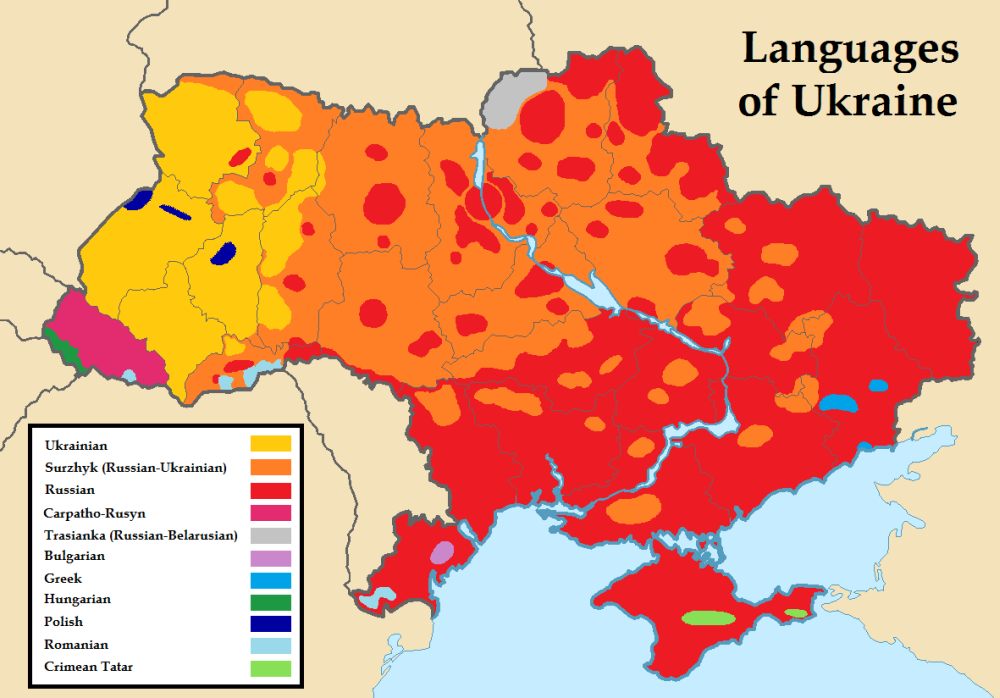

General information
Location
Ukraine is the second largest country in Eastern Europe. Its capital is Kyiv. It borders by Russia to the east, Belarus to the north, Poland, Slovakia and Hungary to the west, Romania and Moldova to the southwest, and the Black Sea and Sea of Azov to the south. Ukraine is one of the biggest European countries. Its geographical position is expedient due to location in Europe and Asia. Over the past decades, Ukraine has become a link between the two continents.
Language
According to the Constitution, the state language of Ukraine is Ukrainian, at the same time the majority of people speak Russian, which was the official language of the Soviet Union, and was widely spoken, especially in eastern and southern Ukraine. Most residents speak Ukrainian as the mother tongue language and Russian as the second one. Ukrainian is mainly spoken in western and central Ukraine. In western Ukraine, the Ukrainian language is the dominant language in cities (such as Lviv). In central Ukraine, Ukrainian and Russian are both equally used in cities. Russian is more common in Kiev, while Ukrainian is the dominant language in rural areas. In eastern and southern Ukraine, Russian is primarily spoken in cities.
